針對駭客攻擊手法, 下列敘述何者錯誤?
A
SQL注入式攻擊(SQL Injection): 攻擊者會嘗試將惡意 SQL 代碼注入到一個網站的資料庫查詢中, 從而獲得未授權的存取權限或提取資料
B
跨站腳本攻擊(Cross-site Scripting, XSS): 攻擊者會將惡意腳本注入到信任的網站中。當其他使用者存取該網站時, 他們的瀏覽器會執行這些腳本, 可能導致資料洩露
C
中間人攻擊(Man in the middle attack): 這種攻擊包括使用多台電腦(通常是受感染的,並被攻擊者控制的電腦)來發起大量的請求, 導致竊取偷聽、重新導向通訊
D
釣魚攻擊(Phishing): 攻擊者會偽裝成可信任的實體(例如銀行或社交媒體網站), 嘗試欺騙使用者透露他們的登錄資訊、信用卡號或其他敏感資訊
(A) SQL Injection 的描述正確，目標是透過注入 SQL 語句來操作後端資料庫。
(B) XSS 的描述正確，目標是在使用者瀏覽器中執行惡意腳本，常利用網站對使用者輸入的信任。
(C) 描述「使用多台電腦...來發起大量的請求」更像是分散式阻斷服務攻擊 (Distributed Denial of Service, DDoS) 的特徵。中間人攻擊 (Man-in-the-Middle attack, MITM) 是攻擊者將自己置於兩方通訊之間，攔截、竊聽甚至竄改通訊內容，達成竊取資訊或操控通訊的目的。因此，(C) 的描述將兩種攻擊混淆，是錯誤的。
(D) 釣魚攻擊的描述正確，核心是利用社交工程手段進行欺騙以獲取敏感資訊。
針對 APT 攻擊(Advanced Persistent Threat), 下列敘述何者正確?
A
APT 常用技術手法, 如: Privilege Escalation 提權、Lateral Movement 橫向移動
B
常見於一般腳本小子(Script Kiddie)
D
利用零日漏洞、客製化的惡意軟體, 缺點是不具備匿名性與持久性
(A) APT 攻擊通常涉及多個階段，攻擊者在入侵後會嘗試提升權限 (Privilege Escalation) 以獲取更高控制權，並在內部網路中進行橫向移動 (Lateral Movement) 以擴大入侵範圍、尋找目標資產。這是 APT 的典型特徵，描述正確。
(B) 腳本小子通常指技術能力較低、使用現成工具進行隨機或非針對性攻擊的駭客。APT 攻擊者則是資源充足、技術高超、有明確目標的組織或個人。兩者截然不同。
(C) APT 的關鍵特徵之一就是針對性 (Targeted)，通常針對特定的組織、行業或國家，以竊取情報、進行破壞或達成其他戰略目標。
(D) APT 攻擊常利用零日漏洞和客製化惡意軟體以規避偵測。其核心目標之一就是保持持久性 (Persistence)，長期潛伏在目標系統中，並盡力維持匿名性或隱匿行蹤。因此，說它不具備匿名性與持久性是錯誤的。
下列哪幾種方式是檢測人員執行紅隊演練過程中可能會使用的攻擊手法? (複選)
A
在 DMZ 網頁伺服器找到 RCE 漏洞並取得系統控制權, 然後在內網進行橫向移動, 嘗試取得 Windows Server Active Directory (AD) 的控制權
B
透過釣魚信件對企業的海外分公司員工進行社交工程, 取得員工電腦控制權, 然後讀取員工電子郵件信箱, 尋找可以拿來利用的機敏資料
C
移動到企業所在的樓層, 側錄 Wi-Fi 然後嘗試破解密碼, 取得企業 Wi-Fi 的存取方式, 入侵企業內部網路
D
註冊成為企業的供應商, 並且利用供應商專用網站造假資料、竄改商品金額, 驗證攻擊者可以用更低的價格買進商品
紅隊演練 (Red Team Assessment) 旨在模擬真實世界的攻擊者，使用多種技術和策略來測試組織的防禦能力。其手法通常涵蓋技術、物理和社交層面。
(A) 利用外部伺服器漏洞 (RCE - Remote Code Execution) 作為初始切入點，然後進行橫向移動以攻擊內部關鍵系統 (如 AD)，是典型的網路攻擊路徑。
(B) 利用釣魚郵件進行社交工程，取得員工權限，再進一步蒐集內部資訊，也是常見的攻擊手法。
(C) 透過物理接近，攻擊無線網路以獲取內部網路存取權，屬於物理與網路結合的攻擊手法。
(D) 偽裝成合法第三方（如供應商），利用其專用系統漏洞進行業務邏輯攻擊或詐欺，也是紅隊演練可能採用的手法之一，用以測試業務流程的安全性。
以上四種都是紅隊演練可能模擬的攻擊手法，旨在從不同面向挑戰企業的防禦縱深。因此，(A), (B), (C), (D) 皆為可能的攻擊手法。
【題組1】情境如附圖所示, 依據 NIST SP800-30 Guide for Conducting Risk Assessments 文件對於「弱點(Vulnerability)」之敘述係指「系統安全程序、設計、裝置、或內部控制的一個瑕疵或缺陷, 若被利用後, 會破壞安全性或違背系統安全政策」。請問關於「弱點」的敘述, 下列何項錯誤?
(題組情境摘要: 公司因供應鏈之客戶要求在執行受託業務時, 必須針對所承接之受託業務有關的資訊安全有所作為, 因此公司高層下令有關人員針對公司在執行受託業務上可能面臨的資訊安全風險議題進行研議。)
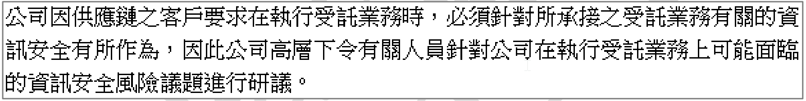
D
組織內部人員違反資安規定, 私自攜帶外接式儲存設備並連接至組織內部重要伺服器使用, 進而導致檔案伺服器遭受勒索病毒感染, 重要資料遭受加密無法使用
根據題目的定義，弱點是程序、設計、裝置或控制上的瑕疵或缺陷。
(A) 作業系統漏洞是設計或實作上的缺陷，符合弱點定義。
(B) 依程序停用離職人員帳號是一個安全控制措施，旨在降低風險。這是一個正確的程序或控制，而不是弱點。若「未」停用帳號，則構成弱點。
(C) IoT 設備無法變更預設密碼，是設計上的缺陷，使得設備容易被入侵，符合弱點定義。
(D) 內部人員違反規定，導致勒索軟體感染，這暴露了安全程序（如禁止使用未經授權設備）或內部控制（如USB 端口管制、人員安全意識）上的缺陷或不足，屬於廣義的弱點範疇（可被惡意行為利用）。
因此，敘述錯誤、不屬於弱點的是 (B)，它描述的是一個安全措施。
【題組1】情境如附圖所示, 依據公司高層的要求, 工程師正評估採用「弱點評估」工具來評估公司內部潛在的弱點項目, 試問下列有關「弱點評估」之敘述, 下列何者「有誤」?
(題組情境摘要: 公司因供應鏈之客戶要求在執行受託業務時, 必須針對所承接之受託業務有關的資訊安全有所作為, 因此公司高層下令有關人員針對公司在執行受託業務上可能面臨的資訊安全風險議題進行研議。)
A
可使用 Nessus Professional 工具來進行系統弱點評估
B
可使用 Acunetix 工具來進行網站弱點評估
C
可使用 Fortify SCA 動態原始碼檢測分析工具來進行軟體系統之原始碼弱點評估
(A) Nessus 是一款廣泛使用的弱點掃描器，主要用於評估作業系統、網路服務等基礎設施的已知弱點。敘述正確。
(B) Acunetix 是一款知名的網站應用程式安全掃描器 (DAST)，專門用於檢測網站（如 SQL Injection, XSS 等）的弱點。敘述正確。
(C) Fortify SCA (Static Code Analyzer) 是一款靜態應用程式安全測試 (SAST) 工具，用於分析原始碼以找出潛在的安全漏洞。題目中描述為「動態原始碼檢測」是錯誤的，SCA 是靜態 (Static) 分析。動態分析 (DAST) 是在應用程式運行時進行測試。
(D) Nmap (Network Mapper) 是一款強大的網路探索和安全稽核工具，可用於端口掃描、服務識別、作業系統偵測，並包含一些腳本引擎 (NSE) 可用於基本的弱點檢測，因此可用於網路設備的弱點評估。敘述正確。
因此，敘述有誤的是 (C)。
【題組1】情境如附圖所示, 工程師在評估使用「弱點評估」工具過程中發現了「通用弱點評分系統(Common Vulnerability Scoring System, CVSS)」的網站, 請問下列敘述何項錯誤?
(題組情境摘要: 公司因供應鏈之客戶要求在執行受託業務時, 必須針對所承接之受託業務有關的資訊安全有所作為, 因此公司高層下令有關人員針對公司在執行受託業務上可能面臨的資訊安全風險議題進行研議。)
A
CVSS 是一個開放的框架, 主要用於傳達軟體弱點的特徵以及該弱點的風險程度
B
CVSS 提供了一種獲取弱點主要特徵並產生回應其嚴重性的數位分數的方法
C
CVSS 可以將數位分數轉換為定性表示形式(例如低、中、高以及嚴重), 來提供組織正確評估其弱點管理流程並確定其處裡弱點的優先順序
D
CVSS 由基本度量組(Base metric groups)、時間度量組(Temporal metric groups)以及環境度量組(Environmental metric groups)等三個部分所組成
(A) CVSS 確實是一個公開、標準化的框架，用於評估和溝通弱點的嚴重性。敘述正確。
(B) CVSS 透過一系列指標（如攻擊向量、複雜度、權限要求、影響等）來捕捉弱點特徵，並計算出一個 0 到 10 的數值分數來表示嚴重性。敘述正確。
(C) 這個數值分數可以對應到定性的嚴重性等級（如 Low, Medium, High, Critical），幫助組織排定弱點修補的優先級。敘述正確。
(D) CVSS v3.1（及之前的版本）確實包含基本(Base)、時間(Temporal)和環境(Environmental)三個度量組。然而，最新的 CVSS v4.0 已經改變了度量組結構，包含 基本 (Base)、威脅 (Threat)、環境 (Environmental) 和 補充 (Supplemental) 四個度量組。題目沒有指明版本，但如果考量到最新的標準，(D) 的描述（僅提三個部分）就不再完全準確或已過時。鑑於 A, B, C 都是對 CVSS 核心概念的正確描述，D 是相對最可能被認定為錯誤的選項（因未反映最新標準）。
【題組1】情境如附圖所示, 工程師使用了弱點掃描軟體來針對公司內部系統進行掃描後, 發現了弱點掃描軟體原生報告內指出公司的系統具有一個「CVE-2022-26809 Remote Procedure Call Runtime Remote Code Execution Vulnerability」嚴重風險程度的弱點, 攻擊者可將特別製作之遠端程序呼叫(Remote Procedure Call, RPC)傳送至 RPC 主機, 即可獲得與 RPC 服務相同之權限, 進而於伺服器上遠端執行任意程式碼, 該工程師為了處理這個弱點, 因此採取了一些的措施來因應, 試問採用下列哪些措施較為合適? (複選)
(題組情境摘要: 公司因供應鏈之客戶要求在執行受託業務時, 必須針對所承接之受託業務有關的資訊安全有所作為, 因此公司高層下令有關人員針對公司在執行受託業務上可能面臨的資訊安全風險議題進行研議。)
A
連接 CVE 網站 (https://cve.mitre.org/) 檢視該弱點的詳細資訊
B
連接微軟官網下載針對此弱點所發布的安全更新程式予以修補
C
在防火牆上採取阻擋 TCP 埠 445 的緩解措施
處理 CVE-2022-26809 這個 RPC 相關的嚴重漏洞，合適的措施包括：
(A) 查閱 CVE 網站 (如 MITRE 或 NVD) 是了解漏洞細節、影響範圍、嚴重性評分 (CVSS) 和官方建議的標準做法。
(B) CVE-2022-26809 是微軟 Windows 系統的漏洞，微軟官方會發布安全更新 (Patch) 來修補此類漏洞。安裝官方更新是最根本的解決方法。
(C) RPC 服務通常使用 TCP 埠 135 和動態端口，但也常與 SMB (使用 TCP 埠 445) 關聯。在防火牆上限制對 445 端口的存取 (特別是來自外部網路或非信任網段)，可以降低此漏洞被利用的風險，是一種補償性或緩解措施，尤其是在無法立即修補時。
(D) 將所有系統更換為 Unix Base 系統是一個極端且不切實際的措施，成本高昂且可能引發新的相容性問題，並非針對單一漏洞的合適處理方式。
因此，較為合適的措施是 (A), (B), (C)。
有關 NIST 網路安全框架(Cybersecurity Framework, CSF) 所參考適用於 IT 與 OT 環境之國際標準或指引。下列敘述何者錯誤?
NIST CSF 是一個整合性的框架，它參考了許多現有的標準和最佳實踐。
(A) ISO/IEC 27001 是資訊安全管理系統 (ISMS) 的國際標準，是 NIST CSF 的重要參考依據之一，特別是在管理和組織層面。
(B) ISA/IEC 62443 系列標準是針對工業自動化和控制系統 (IACS) 安全性的國際標準，特別適用於 OT 環境。ISA 62443-2-1 涉及建立 IACS 安全計畫的要求。
(D) ISA 62443-3-3 涉及系統安全要求和安全等級。
(C) NIST SP 800-72 的標題是 "Guidelines for the Security of PII" (個人可識別資訊安全指南)。雖然 PII 保護是資訊安全的一部分，但 SP 800-72 本身並非 NIST CSF 直接參考的核心國際標準或框架級指引，且其主題相對特定。相較之下，ISO 27001 和 ISA 62443 是更基礎和廣泛被 CSF 參考的標準。
因此，錯誤或關聯性最低的選項是 (C)。
關於 OWASP (Cyber Defense Matrix, CDM) 網路防禦矩陣基本結構的敘述, 下列何者錯誤?
A
網路防禦矩陣(Cyber Defense Matrix, CDM)可協助企業的整體資安綜合防護評估更有邏輯與結構
B
矩陣基本結構可區分為 NIST 網路安全框架(Cybersecurity Framework, CSF)的五個功能以及以資產類別為主的兩個維度
C
NIST 網路安全框架(Cybersecurity Framework, CSF)之框架核心(Framework Core)的五個功能維度包含識別(Identify)、保護(Protect)、偵測(Detect)、回應(Respond)與資產管理(Asset Management)
D
資產類別維度包含設備(Devices)、應用程式(Application)、網路(Network)、資料(Data)與人員(User)
(A) OWASP CDM 旨在提供一個結構化的方式來盤點和評估組織的資安防護措施及其覆蓋範圍。敘述正確。
(B) CDM 矩陣的橫軸是 NIST CSF 的五個功能 (Identify, Protect, Detect, Respond, Recover)，縱軸是五種資產類別 (Devices, Applications, Networks, Data, Users)。所以是以五個功能和五個資產類別構成的兩個維度。選項說以「資產類別為主」的「兩個維度」，描述不精確，應為五個功能與五個資產類別兩個維度。此敘述有誤。
(C) NIST CSF 框架核心的五個功能是：識別(Identify)、保護(Protect)、偵測(Detect)、應變(Respond)和復原(Recover)。選項中將復原(Recover) 誤寫為資產管理(Asset Management)。資產管理是 識別(Identify) 功能下的一個類別。因此，此敘述錯誤。
(D) CDM 的資產類別維度（縱軸）確實包含設備、應用程式、網路、資料和人員。敘述正確。
題目問何者錯誤，B 和 C 皆有錯誤。但 C 的錯誤更為直接，明確指出了錯誤的功能名稱。
機關對外服務網站無法正常提供服務, 經分析 DNS 遭受混合式 DDoS 攻擊, 下列建議之 DDoS 防護措施何者最「不」合適?
A
可透過採購網路流量清洗服務, 來緩解 DDoS 攻擊
B
可透過限制 DNS 查詢次數, 來緩解 DDoS 攻擊
C
如果網路頻寬無須考量, 可使用過濾機制來緩解 DDoS 攻擊
D
可透過避免成為 Open Resolver 來緩解 DDoS 攻擊
防禦 DNS DDoS 攻擊的措施：
(A) 流量清洗服務 (Scrubbing Center) 是專業的 DDoS 防護方案，可以清洗惡意流量，將乾淨流量導回目標，是有效的緩解方式。
(B) 限制 DNS 查詢次數 (Rate Limiting) 對於防禦正常的阻斷服務攻擊可能有一定效果，但對於針對 DNS 伺服器本身的 DDoS 攻擊（尤其是來自大量偽造來源 IP 的放大攻擊或洪水攻擊）效果有限。限制次數可能誤擋正常用戶，且無法應對大規模的攻擊流量。此外，限制「查詢次數」並不能解決 DNS 反射放大攻擊等問題的核心。
(C) 過濾機制，例如防火牆的存取控制、IPS 的惡意模式比對、或專門的 DDoS 緩解設備，可以在網路頻寬足夠的情況下，過濾掉部分惡意流量。
(D) 避免將 DNS 伺服器設定為 Open Resolver（開放遞迴解析器），可以防止伺服器被用於發動 DNS 放大攻擊，是重要的安全配置。
綜合來看，(B) 限制查詢次數對於緩解大規模 DNS DDoS 攻擊的效果最差，且可能影響正常服務，因此最不合適。
如附圖所示, 駭客透過某機關網頁上傳功能漏洞植入 APT 惡意程式, 並嘗試取得系統資料, 恐有資料外洩之虞。下列建議之防範措施何者最「不」合適?
(附圖描述：駭客利用網頁可上傳任意檔案至主機弱點夾帶APT程式 -> 惡意程式可蒐集機關內資料並有外洩之可能 -> APT攻擊滲透內部系統竊取機敏資料。流向：駭客 -> 網頁上傳功能 -> 系統A -> 系統B -> 系統C)
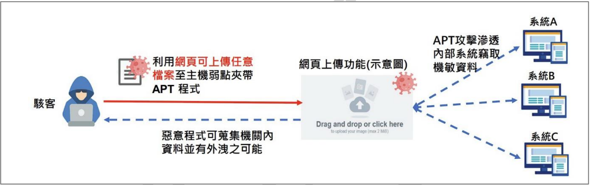
B
為落實軟體及資訊完整性防護, 上傳檔案不限格式且一律透過防毒軟體告警
C
對於目錄進行完整性監控及驗證, 即時偵測目錄異動行為
D
辦理服務安全性檢測作業時, 可評估採多家廠商交互驗證為宜
針對防範利用網頁上傳漏洞植入 APT 程式的攻擊：
(A) 建立威脅偵測管理機制（如 SIEM, EDR, 威脅情資整合）有助於及早發現異常活動和潛在的 APT 攻擊。這是合適的宏觀措施。
(B) 允許上傳任意格式的檔案本身就是一個巨大的安全風險，容易被用於上傳惡意程式（如 Webshell, APT 程式）。僅靠防毒軟體告警是不夠的，因為 APT 常使用免殺或客製化的惡意程式。正確的做法應是嚴格限制允許上傳的檔案類型（白名單）、檢查檔案內容、限制上傳目錄的執行權限等。因此，此選項描述的措施非常不合適。
(C) 監控關鍵目錄（特別是網站根目錄、上傳目錄）的完整性，可以在檔案被惡意竄改或植入時及時發現。這是合適的偵測措施。
(D) 在進行安全性檢測（如滲透測試、源碼檢測）時，委託多家廠商或進行交叉驗證，可能發現單一廠商未能找出的問題，提高檢測的覆蓋率和有效性。這是合適的驗證措施。
因此，最不合適的防範措施是 (B)。
對於一家正準備進行採購網站應用程式的公司來說, 為什麼應該以自動化漏洞評估系統(Automated Vulnerability Assessment System, AVAS)作為驗收基礎, 而不是根據開放式網路應用安全項目(Open Web Application Security Project, OWASP) Top 10 的 10 大弱點項目作為驗收要件?
A
OWASP Top 10 僅涵蓋最常見的安全漏洞, 而不是所有可能的安全問題
D
AVAS 僅針對網站應用程式, 而 OWASP Top 10 適用於所有類型的軟體
(A) OWASP Top 10 列出的是當前業界最普遍、風險較高的十大 Web 應用程式安全風險類別，它是一個意識提升和教育的文件，代表了常見的風險，但並非涵蓋所有可能的漏洞。AVAS（通常指 DAST 或 SAST 工具）則能掃描更廣泛的、已知的具體漏洞實例。因此，以 AVAS 作為基礎更能全面評估安全性，而不是僅限於 Top 10 類別。此敘述解釋了為何不應僅依賴 Top 10，是正確的理由。
(B) 雖然檢查 OWASP Top 10 項目可能相對容易入門，但AVAS 自動化工具的實施成本和複雜度各異，此選項的比較過於簡化，且非主要原因。
(C) 領導者是否對 AVAS 有特定印象並非技術上的主要考量因素。
(D) AVAS 可以是針對網站應用的（如 DAST），也可以是針對原始碼的（SAST），甚至基礎設施的（弱點掃描器）。而 OWASP Top 10 主要聚焦於 Web 應用程式的安全風險。此敘述反過來了，不正確。
因此，最能解釋為何應以 AVAS 為基礎（而非僅 OWASP Top 10）的原因是 (A)，因為 Top 10 的覆蓋範圍有限。
如附圖所示, 某機關防火牆發現大量異常連線, SSLVPN 設備發送大量 SMB 封包, 經查 SSL VPN 設備存在安全性漏洞(CVE-2023-3519)。攻擊者利用漏洞上傳 Webshell, 亦可透過解密設備中之設定檔來取得 AD 連線帳密, 後續透過 ldapsearch 進一部蒐集內網使用者資訊。請問應進行下列哪些措施可最有效避免此一攻擊? (複選)
(附圖描述攻擊流程：①利用漏洞CVE-2023-3519建立webshell -> ②連線至Webshell -> ③取得AD連線帳密 -> ④蒐集AD使用者資料 -> ⑤修改index.html -> ⑥將使用者帳密傳至外部伺服器 -> ⑦透過SMB連線機關其他主機)
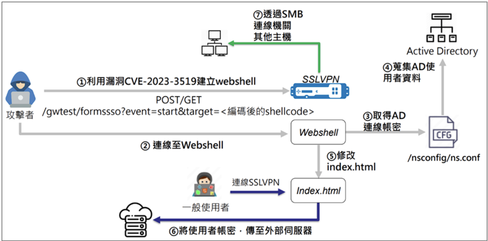
A
所有員工與服務應強制啟用抗網釣攻擊的多因素驗證機制
B
針對 SSL VPN 登入頁面進行網頁置換監控告警
C
隔離此類 SSL VPN 設備於獨立網段, 降低攻擊擴散途徑
D
內網啟用 SMBv1、SMBv2 伺服器訊息區塊協定以達傳輸加密
針對此利用 SSL VPN 漏洞 (CVE-2023-3519，應為Citrix Bleed漏洞) 的攻擊鏈，有效的防禦措施包括：
(A) 即使攻擊者竊取了 AD 帳密，強制啟用 MFA (特別是抗釣魚的類型，如 FIDO2) 可以阻止其利用竊取的帳密進行後續登入和橫向移動。這是非常有效的措施。
(B) 攻擊者在取得控制權後可能會修改登入頁面 (index.html) 以進行釣魚或其他惡意活動。監控網頁文件的完整性或是否有異常置換，可以及早發現入侵跡象。
(C) 將 SSL VPN 這類面向外部、風險較高的設備隔離在獨立網段 (如 DMZ)，並嚴格控制其與內部網路的通訊，可以有效限制攻擊者成功入侵 VPN 後的橫向移動範圍，降低損害。
(D) SMBv1 是已知不安全的協定，應被禁用。SMBv2 相對安全，但傳輸加密需要額外配置（SMB 3.0 及以上版本原生支持加密）。啟用不安全的 SMBv1 反而會增加風險。正確的做法應是禁用 SMBv1，並盡可能使用支持加密的 SMBv3。
因此，最有效的措施是 (A), (B), (C)。
身分驗證機制是利用帳戶密碼進行作為識別使用者的機制, 是多數資訊系統驗證使用者身分的基礎。關於身分驗證機制的敘述, 下列那些正確? (複選)
A
設定「最小密碼長度」的原則主要是要產生更多的密碼組合, 提高被破解的難度。美國國家標準暨技術研究院(National Institute of Standards and Technology, NIST)建議最小長度為 8 個字元
B
設定「密碼歷程記錄」的原則為了方便使用者自己找到以前使用過的密碼
C
設定「密碼最短使用效期」的原則是指該密碼必須使用一段時間後才能再次進行變更, 通常是配合密碼歷程機制啟用
D
「圖形驗證碼」是設計一組對人類能夠輕易回答而對電腦是困難的題目, 以作為區分執行動作的是電腦還是人類的行為
關於密碼策略和驗證機制：
(A) 密碼長度越長，可能的組合數越多，暴力破解的難度越高。NIST SP 800-63B 建議使用者自訂密碼至少為 8 個字元。敘述正確。
(B) 密碼歷程記錄的目的是防止使用者重複使用最近用過的舊密碼，以增加密碼洩漏後的風險。而不是方便使用者找回舊密碼。敘述錯誤。
(C) 密碼最短使用效期 (Minimum password age) 是為了防止使用者在被強制變更密碼後，立即改回原密碼，以規避密碼歷程的限制。通常設定為 1 天或更長。敘述正確。
(D) 圖形驗證碼 (CAPTCHA) 的全名是 "Completely Automated Public Turing test to tell Computers and Humans Apart"，其目的正是設計一個對人類容易但對機器困難的測試，以區分操作者是真人還是自動化程式。敘述正確。
因此，正確的敘述是 (A), (C), (D)。
【題組2】情境如附圖所示。請問下列何項防禦改善措施跟本次事件的起因「較無直接關連」?
(題組情境摘要: 上市櫃公司發生重大資安事件。起因：同仁點擊釣魚信件 -> 郵件閘道未攔截 -> 端點防毒未更新 -> 筆電被控 -> 成為跳板 -> 攻擊者橫向移動 -> 取得核心系統與機敏資料控制權。後續改善計畫由主管制定。)
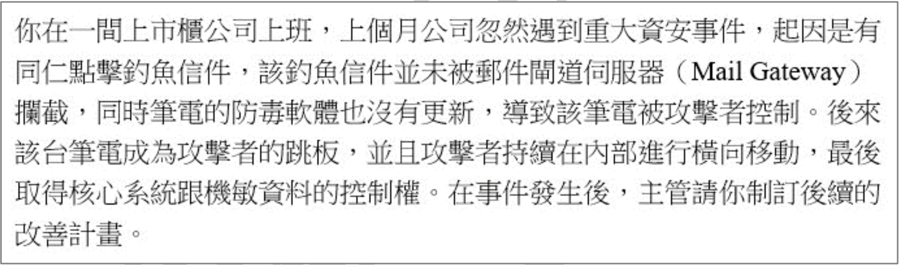
A
定期對員工進行教育訓練及案例說明, 提升員工的資安意識, 降低員工點擊釣魚信件的機率
B
確保每一台端點都安裝防毒軟體與 EDR 軟體並且定期更新, 提升端點設備對抗惡意程式的能力
C
定期確認郵件閘道伺服器(Mail Gateway)阻擋釣魚信件的防護能力
本次事件的根本起因是員工點擊釣魚郵件，加上郵件閘道和端點防護未能有效攔截或偵測，導致初始入侵成功，最終引發橫向移動和資料外洩。
(A) 教育訓練可以降低員工點擊釣魚郵件的機率，直接針對事件起因。關聯性高。
(B) 確保端點防護（防毒/EDR）有效運作並更新，可以攔截或偵測惡意軟體，阻止初始入侵或後續活動。關聯性高。
(C) 提升郵件閘道的防護能力，可以攔截釣魚郵件，從源頭阻止攻擊。關聯性高。
(D) 定期對公司官網進行弱點掃描等檢測，是保護官網本身安全的重要措施。但本次事件的入侵途徑是釣魚郵件，而非直接攻擊官網漏洞。雖然官網安全也很重要，但與「本次事件起因」的直接關聯性最低。
因此，與本次事件起因較無直接關連的措施是 (D)。
【題組2】情境如附圖所示。2016 年美國銀行當時的首席安全科學家 Sounil Yu 提出了 OWASP CDM (Cyber Defense Matrix), 希望幫助企業盤點目前的防禦機制, 並且把盤點結果對應到 NIST CSF 五大類別以及五種企業資產類別。你的主管請你運用 OWASP CDM 的觀念來盤點目前的防禦機制, 請問關於 OWASP CDM 描述, 下列何項「錯誤」?
(題組情境摘要: 上市櫃公司發生重大資安事件。起因：同仁點擊釣魚信件 -> 郵件閘道未攔截 -> 端點防毒未更新 -> 筆電被控 -> 成為跳板 -> 攻擊者橫向移動 -> 取得核心系統與機敏資料控制權。後續改善計畫由主管制定。)
A
OWASP CDM 的縱軸有五個項目, 由上到下包含設備(Devices)、應用程式(Application)、網路(Network)、資料(Data)與人員(User)
B
OWASP CDM 的橫軸有五個項目, 由左到右包含識別(Identify)、保護(Protect)、偵測(Detect)、回應(Respond)、復原(Recover)
C
在這個 5 乘 5 的矩陣中, 橫軸下方有一個區域標示了依賴程度, 依賴程度有三個考量因素, 包含科技(Technology)、人員(People)、流程與治理(Process/Govern), 其中對於科技(Technology)的依賴程度由左至右是越來越高, 對於人員(People)的依賴程度由左至右是越來越低
D
OWASP CDM 主要用來分類資安產品與服務所對應到的防禦類別, 無法用來分析漏洞成因
關於 OWASP CDM 的描述：
(A) CDM 的縱軸（Y軸）代表資產類別，確實是設備、應用程式、網路、資料、人員。敘述正確。
(B) CDM 的橫軸（X軸）代表資安功能，對應 NIST CSF 的五大功能：識別、保護、偵測、回應、復原。敘述正確。
(C) 在 CDM 原始模型中，下方確實有討論到不同功能對科技、流程、人員的依賴程度。通常認為，從左到右（從識別到復原），對科技的依賴先升後降（保護/偵測階段最高），而對人員和流程的依賴程度逐漸增加（尤其在回應/復原階段）。因此，選項中描述的「科技依賴度由左至右越來越高」和「人員依賴度由左至右越來越低」均不完全準確，尤其是人員依賴度應該是增加的。因此，此敘述錯誤。
(D) CDM 主要是一個盤點和分類安全控制措施（產品、服務、流程）的框架，幫助理解防護覆蓋情況和缺口，而非用於直接分析具體的漏洞成因。敘述正確。
因此，錯誤的敘述是 (C)。
【題組2】情境如附圖所示。你開始透過 OWASP CDM 來制訂後續的改善計畫, 請問下列何者描述是正確的?
(題組情境摘要: 上市櫃公司發生重大資安事件。起因：同仁點擊釣魚信件 -> 郵件閘道未攔截 -> 端點防毒未更新 -> 筆電被控 -> 成為跳板 -> 攻擊者橫向移動 -> 取得核心系統與機敏資料控制權。後續改善計畫由主管制定。)
A
透過資產盤點軟體來瞭解公司內部的電腦數量與作業系統版本並建立清單, 屬於識別(Identify)
B
確保伺服器所有的 port 都只對有需要存取的來源電腦開放, 屬於偵測(Detect)
C
開啟更詳盡的日誌紀錄, 屬於復原(Recover)
D
每個帳號使用唯一的密碼以及使用多因子認證, 屬於回應(Respond)
將改善措施對應到 NIST CSF / OWASP CDM 的功能：
(A) 資產盤點和建立清單，了解組織有哪些資產及其狀態，是識別(Identify) 功能的核心活動之一 (ID.AM - Asset Management)。敘述正確。
(B) 限制端口存取（如使用防火牆規則）是一種存取控制措施，旨在防止未經授權的連線，屬於保護(Protect) 功能 (PR.AC - Access Control)。不屬於偵測。
(C) 開啟日誌紀錄是為了能夠監控系統活動並在事件發生時進行追蹤分析。它主要支持偵測(Detect) 功能 (DE.AE, DE.CM) 和應變(Respond) 功能 (RS.AN)。不屬於復原。
(D) 要求唯一密碼和多因子認證是強化身份驗證和存取控制的措施，旨在預防未經授權的存取，屬於保護(Protect) 功能 (PR.AC)。不屬於回應。
因此，正確的描述是 (A)。
【題組2】情境如附圖所示。你的主管對於攻擊者從外網入侵到內網感到很擔憂, 想要參考 MITRE ATT&CK 的 Initial Access(初始進入點)類別來減少外網被入侵的範圍、降低機率, 請問關於 MITRE ATT&CK 的描述, 下列哪些「錯誤」? (複選)
(題組情境摘要: 上市櫃公司發生重大資安事件。起因：同仁點擊釣魚信件 -> 郵件閘道未攔截 -> 端點防毒未更新 -> 筆電被控 -> 成為跳板 -> 攻擊者橫向移動 -> 取得核心系統與機敏資料控制權。後續改善計畫由主管制定。)
A
只要經常執行弱點掃描、滲透測試, 並且積極修補弱點, 就不可能發生 Exploit Public-Facing Application(利用對外開放的應用程式)這類型的問題
B
攻擊者經常可以透過 Google Hacking 或是在 GitHub 搜尋企業資料找到 Valid Accounts(有效帳號), 有機會進一步利用這些 Valid Accounts 來登入員工的 VPN 或 Email
C
Supply Chain Compromise(供應鏈攻擊)有可能發生在商用軟體、開源函式庫、硬體設備上, 攻擊來源非常廣泛, 因此企業採購軟、硬體時必須對供應鏈進行妥善的監督與管理
D
Phishing(網路釣魚)指的是透過 Email 進行釣魚, 誘騙使用者點擊附檔來取得設備控制權, 目前除了 Email 之外沒有其他媒介或方法可以對使用者進行網路釣魚
關於 MITRE ATT&CK 的 Initial Access 戰術：
(A) 雖然弱點掃描和滲透測試有助於發現並修補漏洞，但無法保證 100% 的安全。可能存在零日漏洞、未被掃描工具覆蓋的漏洞、或是掃描/測試後到修補完成前的空窗期被利用。宣稱「不可能發生」是過於絕對的說法，是錯誤的。
(B) Valid Accounts (有效帳號) 是 Initial Access 的一種技術 (T1078)。攻擊者確實可能透過公開來源（如搜尋引擎、程式碼託管平台）找到洩漏的帳號密碼，並利用這些帳密嘗試登入企業系統（如 VPN, Email）。敘述正確。
(C) Supply Chain Compromise (供應鏈攻擊) (T1195) 指的是透過攻擊軟硬體供應商或開源專案，將惡意代碼植入其產品中，再經由正常的供應鏈管道散佈給下游使用者。這是嚴峻且來源廣泛的威脅。敘述正確。
(D) Phishing (釣魚) (T1566) 是常見的初始入侵手法。雖然 Email 是最主要的釣魚媒介，但釣魚攻擊也可以透過簡訊 (Smishing)、語音 (Vishing)、即時通訊軟體、社交媒體等多種管道進行。宣稱 Email 之外沒有其他媒介是錯誤的。
因此，錯誤的敘述是 (A) 和 (D)。
建置異地或遠距系統的安全連網機制時, 請問下列何者通訊安全加密機制規劃較為適當?
A
採用對稱式加密機制來處理大量訊息, 並使用非對稱式加密進行金鑰交換
B
採用對稱式加密機制來處理大量訊息, 並使用數位簽章進行金鑰交換
C
採用非對稱式加密機制來處理大量訊息, 並使用數位簽章進行金鑰交換
D
採用非對稱式加密機制來處理大量訊息, 並使用對稱式加密進行金鑰交換
在規劃安全通訊加密機制時，通常結合對稱加密和非對稱加密的優點：
- 對稱式加密：速度快，適合處理大量資料的加解密。缺點是金鑰配送困難且不安全。
- 非對稱式加密：金鑰交換安全（使用公鑰加密，私鑰解密），但速度慢，不適合處理大量資料。
- 數位簽章：使用非對稱加密原理，主要用於驗證訊息來源（身份認證）和確保訊息完整性（不可否認性），而非直接用於金鑰交換本身。
常見的混合加密模式（如 TLS/SSL）的做法是：
1. 使用非對稱式加密來安全地協商或交換一個一次性的對稱金鑰（會話金鑰）。
2. 後續的大量資料傳輸則使用這個對稱金鑰進行對稱式加密，以確保效率。
分析選項：
(A) 採用對稱加密處理大量訊息（效率高），並用非對稱加密進行金鑰交換（安全性高）。這符合混合加密的最佳實踐。正確。
(B) 數位簽章主要用於身份驗證和完整性，不是金鑰交換的主要機制。
(C) 使用非對稱加密處理大量訊息效率太低。
(D) 使用非對稱加密處理大量訊息效率低，且使用對稱加密進行金鑰交換無法解決金鑰配送問題。
因此，最為適當的規劃是 (A)。
關於備份3-2-1 原則的敘述, 下列何者正確?
備份 3-2-1 原則是一個廣泛認可的資料備份最佳實踐，其含義是：
- **3** 份備份：至少保留三份資料副本（一份原始資料 + 兩份備份）。
- **2** 種不同媒體：將備份存放在至少兩種不同的儲存媒體類型上（例如：內部硬碟 + 外部硬碟、磁帶、網路儲存、雲端儲存）。
- **1** 份異地備份：至少將一份備份副本存放在不同的地理位置（異地）。
分析選項：
(A) 「分開存放在兩種不同儲存媒體」符合 3-2-1 原則中的 "2"。敘述正確。
(B) 雖然提到「至少三份」，但將備份放在同一塊硬碟的不同分割區 (C槽/D槽) 並不能有效抵禦硬碟損壞的風險，不符合「兩種不同媒體」和「一份異地」的要求。
(C) 存放在不同樓層可能可以算是某種程度的異地，但 3-2-1 原則的核心更強調媒體類型和地理位置的分散，單純不同樓層可能不足以應對火災、水災等區域性災難。
(D) 如果原始資料或備份資料經過加密，那麼對應的解密金鑰也必須妥善備份，否則備份資料將無法還原。此敘述錯誤。
因此，最符合 3-2-1 原則精神的正確敘述是 (A)。
如附圖所示, 機關透過
威脅情資分享以達到及早預防或應變處理, 目前業界針對此等資料交換已發展出多種格式/機制, 附圖為
惡意程式情資, 其所使用格式為下列何項?
{
"type": "bundle",
"id": "bundle--2a25c3c8-5d88-4ae9-862a-cc3396442317",
"objects": [
{
"type": "indicator",
"spec_version": "2.1",
"id": "indicator--a932fcc6-e032-476c-826f-cb970a5a1ade",
"created": "2014-02-20T09:16:08.989Z",
"modified": "2014-02-20T09:16:08.989Z",
"name": "File hash for Poison Ivy variant",
"description": "This file hash indicates that a sample of Poison Ivy is present.",
"indicator_types": [
"malicious-activity"
],
"pattern": "[file:hashes.'SHA-256' = 'ef537f25c895bfa782526529a9b63d97aa631564d5d789c2b765448c8635fb6c']",
"pattern_type": "stix",
"valid_from": "2014-02-20T09:00:00Z"
},
{
"type": "malware",
"spec_version": "2.1",
"id": "malware--fdd60b30-b67c-41e3-b0b9-f01faf20d111",
"created": "2014-02-20T09:16:08.989Z",
"modified": "2014-02-20T09:16:08.989Z",
"name": "Poison Ivy",
"malware_types": [
"remote-access-trojan"
],
"is_family": false
},
{
"type": "relationship",
"spec_version": "2.1",
"id": "relationship--29dcdf68-1b0c-4e16-94ed-bcc7a9572f69",
"created": "2020-02-29T18:09:12.808Z",
"modified": "2020-02-29T18:09:12.808Z",
"relationship_type": "indicates",
"source_ref": "indicator--a932fcc6-e032-476c-826f-cb970a5a1ade",
"target_ref": "malware--fdd60b30-b67c-41e3-b0b9-f01faf20d111"
}
]
}
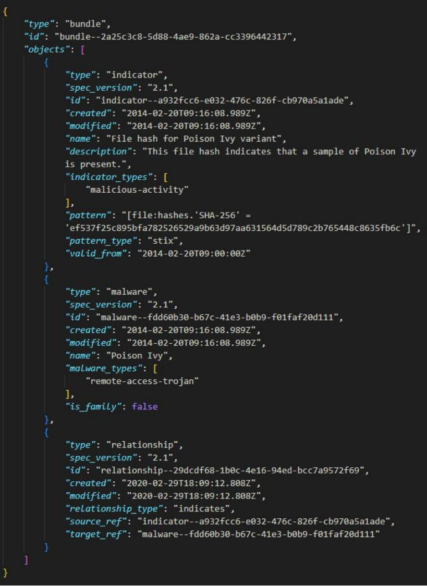
附圖顯示的是一個 JSON 格式的資料，其中包含了多個物件 (`objects`)，每個物件有 `type` (如 "indicator", "malware", "relationship"), `id`, `created`, `modified` 等欄位，以及特定的模式 (`pattern`) 和模式類型 (`pattern_type`: "stix")。
- STIX (Structured Threat Information Expression) 是一個用於描述網路威脅情資的標準化語言和格式。它定義了多種物件類型（如 Indicator, Malware, Relationship, Attack Pattern, Threat Actor 等）及其屬性，用於結構化地表達威脅資訊。附圖的格式與 STIX 2.1 的規範高度吻合，特別是 `type`, `spec_version`, `pattern`, `pattern_type` 等欄位。
- TAXII (Trusted Automated eXchange of Intelligence Information) 是一個用於交換 STIX 格式威脅情資的應用層協定。
- CybOX (Cyber Observable eXpression) 是一個用於描述網路可觀察物件（如檔案、IP 位址、註冊表項）的標準化模式，通常作為 STIX 的一部分使用（在 STIX 2.x 中已被 STIX Cyber-observable Objects (SCOs) 取代）。
- MAEC (Malware Attribute Enumeration and Characterization) 是一個用於描述惡意軟體屬性和行為的標準化語言。
根據附圖的整體結構和欄位（特別是 `pattern_type: "stix"` 和各種物件類型），可以確定其使用的格式是 STIX。
因此，正確答案是 (C)。
如附圖所示, 某機關伺服器管理員於系統例行巡檢時, 發現應用程式日誌中出現 “
Unauthorized data access attempt” 等告警訊息, 下列何者是最優先的應變措施?
2024-01-10T08:23:45.678Z [INFO] User login: username=admin, IP=192.168.1.10, method=SSH
2024-01-10T08:24:01.123Z [WARNING] Unusual command pattern detected: username=admin, IP=192.168.1.10, command='sudo cat /etc/passwd'
2024-01-10T08:24:05.678Z [INFO] Database query executed: username=admin, query='SELECT * FROM users'
2024-01-10T08:24:10.432Z [ERROR] Unauthorized data access attempt: username=admin, resource='user_credit_card_info'
2024-01-10T08:25:30.789Z [ALERT] Excessive data download by user: username=admin, data=500MB
2024-01-10T08:30:00.001Z [ALERT] Intrusion detection system triggered: IP=192.168.1.12, method=Port Scanning
2024-01-10T08:31:00.789Z [INFO] Firewall rule triggered: rule_id=1005, action=block, IP=192.168.1.12
2024-01-10T08:32:00.456Z [CRITICAL] Multiple failed login attempts: username=root, IP=192.168.1.12
...
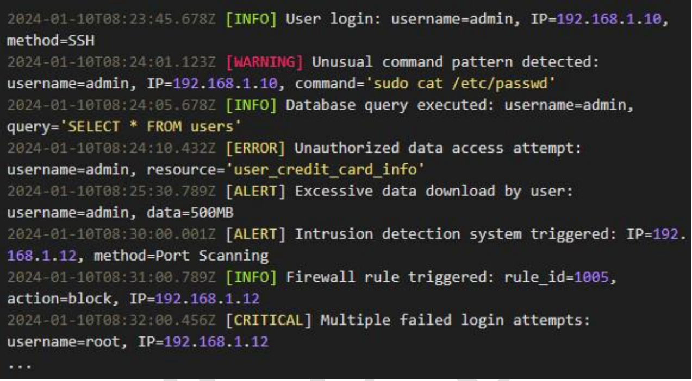
日誌顯示 `username=admin` 成功登入後，執行了異常指令 (`sudo cat /etc/passwd`)，接著嘗試存取敏感資源 (`user_credit_card_info`) 時被拒絕 (Unauthorized data access)，然後有大量資料下載的告警。這強烈暗示管理員帳號 (admin) 可能已失陷或被濫用。
應變措施的優先順序應是遏止損害和調查根因。
(A) 確定防毒軟體版本是例行維護工作，非針對此緊急事件的首要應變。
(B) 立即清查所有管理員帳號（特別是 admin）的登入活動、來源 IP、執行指令，確認是否有異常，並考慮暫時停用或強制變更密碼，是最直接且最優先的應變措施，以阻止潛在的持續入侵或濫用。
(C) 全面性網路安全評估是後續改善措施，而非立即應變。
(D) 更新防火牆規則阻擋可疑流量是必要的，但首先要確定是哪個流量可疑。清查帳號狀態有助於找出惡意來源 IP (如此例中的 192.168.1.10)，才能精確阻擋。
因此，最優先的應變措施是 (B)。
H 公司於上周發生公司 email 超過 4 個小時以上無法收發的資安事件, 經 MIS 人員處理後發現, 郵件伺服器因硬碟空間不足而無法正常運作, 並由追蹤相關記錄中找出服務中斷前, 系統正在處理一封寄給全公司 2000 位同仁的內部公告郵件, 其之中被夾帶著 4GB 的附檔, 但此附檔在防毒軟體和沙箱工具檢查後並無病毒或威脅性, 刪除此郵件及相關衍生作業後, 郵件伺服器恢復正常運作, 檢討此次內部資安攻擊事件, 確認為人員操作失誤所致。請問下列哪些措施可以防範相關事件再度發生? (複選)
A
儘快增購郵件伺服器的硬碟容量, 避免再發生相同空間不足的問題再度發生
B
對員工加強資安教育訓練, 避免錯誤的資訊系統操作行為
C
增加防火牆檢查細則, 減少大量或敏感資料的傳輸與攻擊事件
D
郵件伺服器增設郵件處理容量限制, 阻絕大檔案的傳送服務
事件的直接原因是硬碟空間不足，根本原因是人員操作失誤（寄送超大附件）。防範措施應針對這兩點。
(A) 增加硬碟容量可以直接解決空間不足的問題，防止因容量耗盡導致的服務中斷。這是直接的技術改善措施。
(B) 加強教育訓練，提升員工對系統操作（如附件大小限制、正確的公告發布方式）的認知，可以減少人為操作失誤。這是針對根本原因的管理措施。
(C) 防火牆主要工作在網路層和傳輸層的存取控制，對於郵件伺服器內部處理附件大小導致的空間問題，關聯性較低。增加防火牆檢查細則無法直接解決此問題。
(D) 在郵件伺服器設定附件大小或郵件總容量的限制，可以在系統層面阻止過大的郵件被處理或寄送，直接防止類似因超大附件耗盡空間的事件再次發生。這是有效的技術控制措施。
因此，可以防範事件再度發生的措施是 (A), (B), (D)。
【題組3】情境如附圖所示, 特別聘請你擔任資訊安全長一職, 首要之務, 你必須解決大量的 Log 時間不同步的問題, 下列那一個方案能提供最佳成本效益?
(題組情境摘要: 機房查核發現網站伺服器有Webshell，追查log發現外部入侵紀錄，但各設備(網站AP防火牆、外部防火牆、網站主機)Log時間有誤差。調查發現有管理員帳號從網站主機透過員工入口網站登入AD成功，且有大量帳號鎖定事件。員工共享磁碟資料被加密。)
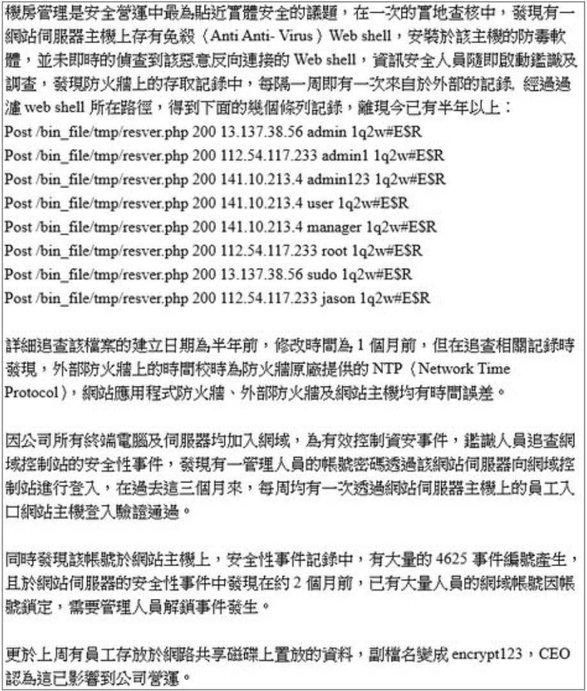
A
將主要網域控制站的 NTP 校時指向國家時間頻率實驗室, 並將所有設備 NTP 校時指向主要網域控制站。
C
將不同設備指向不同的 NTP 校時 IP 以分散流量
解決日誌時間不同步問題，需要建立一致且準確的時間來源。NTP (Network Time Protocol) 是標準的解決方案。
(A) 設定層級式的 NTP 架構：讓核心伺服器（如主要網域控制站 PDC）指向權威時間來源（如國家時間實驗室），然後讓內部所有其他設備都指向這個內部核心伺服器進行校時。這是標準、可靠且具成本效益（減少對外請求）的最佳實踐。
(B) 更換所有設備為支援電波校時的設備，成本極高，不切實際。
(C) 將設備指向不同的 NTP 伺服器，雖然可以分散流量，但可能導致各設備間仍然存在微小的時間差（因不同外部伺服器的精確度和網路延遲不同），無法保證內部時間的絕對一致性。相比之下，統一指向內部權威來源更好。
(D) 手動校時非常不可靠，容易出錯且無法維持精確同步，是最差的方案。
因此，提供最佳成本效益且能有效解決問題的方案是 (A)。
【題組3】情境如附圖所示, 發現 Windows 作業系統建置的網站伺服器, 該主機上的安全性事件中, 查得大量的 4625 事件編號之事件, 此事件編號所指的是下列何種事件?
(題組情境摘要: 同上 Q24)
在 Windows 安全性事件日誌中：
- 事件 ID 4624 代表「帳戶已成功登入」。
- 事件 ID 4625 代表「帳戶登入失敗」。
- 事件 ID 4740 代表「帳戶已被鎖定」。
- 帳號異動（如建立、刪除、修改）對應多個不同的事件 ID (如 4720, 4722, 4726, 4738 等)。
情境中提到查得大量的事件 ID 4625，這表示有大量的帳號登入失敗嘗試。這通常意味著可能有密碼猜測、暴力破解或密碼噴灑等攻擊正在發生。
因此，事件 4625 指的是 (D) 帳號登入失敗。
【題組3】情境如附圖所示, 於網站存取 Log 中出現了大量類似密碼的字元“1q2w#E$R”, 而前面的欄位中出現了包含 admin, root, jason 等帳號型式的字元, 依據這個 log 的內容, 以 post 的 http 方法, 向 /bin_file/tmp/resver.php 傳送了上述的內容, 且得到的狀態代碼回應為 200, 這種類型的記錄應屬於下列何種攻擊手法?
(題組情境摘要: 同上 Q24)
Log 記錄顯示，攻擊者使用 POST 方法，針對多個不同的帳號 (admin, root, jason, admin1, admin123, user, manager, sudo) 嘗試使用相同的或少數幾個密碼 (“1q2w#E$R”) 進行登入。這種用少量常用密碼去嘗試大量不同帳號的攻擊方式，稱為密碼噴灑 (Password Spraying)。其目的是避免因對單一帳號嘗試過多錯誤密碼而觸發帳號鎖定。
- 資料庫注入攻擊 (SQL Injection) 是針對資料庫查詢語句的攻擊。
- 跨站台請求偽造 (CSRF) 是誘騙使用者在已登入的狀態下執行非預期的操作。
- 密碼暴力破解 (Brute Force) 通常是針對單一帳號，嘗試大量不同的密碼組合。
因此，根據 Log 特徵，最符合的攻擊手法是 (B) 密碼噴灑攻擊。
【題組3】情境如附圖一所示, 本次事件範圍廣泛, 涵蓋範圍除了有網站服器主機、網域控制站, 而鑑識小組所發現的問題, 包含有如附圖二的項目, 鑑識小組認為應有網站零日漏洞被利用。請問下列哪 2 項對於員工個人帳號保護最為有效? (複選)
(附圖一摘要: 同 Q24 情境)
(附圖二摘要: 1. 時間未同步，鑑識困難。 2. Log有密碼猜測行為。 3. 管理員帳密外洩。 4. 大量帳號鎖定。 5. 共享磁碟被勒索軟體加密。)
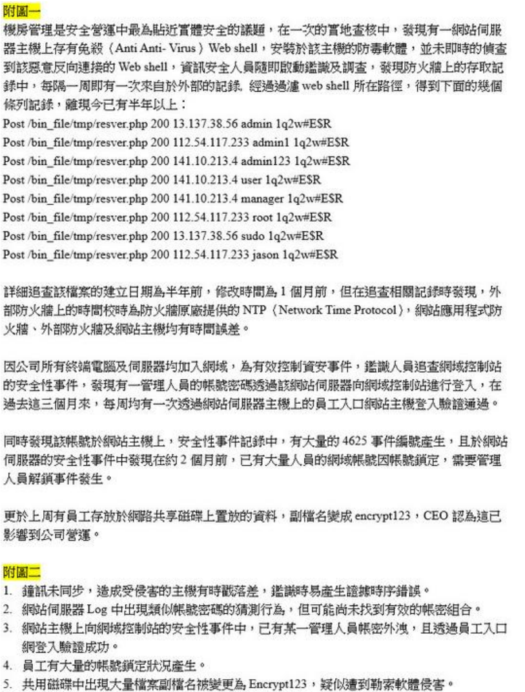
A
EIP (Enterprise Information Portal) 系統應限定僅有內部 IP 得以連接
B
密碼破解類的字典檔攻擊, 應宣導加長密碼長度以提升帳號安全
C
導入 SOC (Security Operation Center) 機制使入侵行為即早得到預警
題目要求找出對「員工個人帳號保護」最有效的措施，基於情境中發現的管理員帳密外洩和密碼猜測行為。
(A) 限制 EIP 系統僅內部 IP 可連線，可以縮小攻擊面，但若攻擊者已在內網（如透過 VPN 或其他方式），此措施無效。且對於密碼本身的保護效果有限。
(B) 宣導加長密碼長度、增加複雜度，可以直接提升密碼強度，抵抗字典檔攻擊和暴力破解。這是對帳號密碼本身的直接保護措施。
(C) 導入 SOC 機制主要用於偵測和應變，而非直接「保護」帳號本身不被破解或盜用。
(D) 導入多因子身份驗證 (MFA) 意味著即使密碼被猜測或竊取，攻擊者仍需第二個驗證因子（如 OTP、推播確認、實體金鑰）才能成功登入，極大提升了帳號的安全性。這是目前公認最有效的帳號保護措施之一。
因此，對於員工個人帳號保護最為有效的措施是 (B) 和 (D)。
網路安全滲透測試的目標包括一切與網路相關的基礎設施, 包含網路裝置、作業系統、實體安全、應用程式、管理制度等。下列敘述哪些錯誤? (複選)
A
網路裝置是包含所有能夠連接到網路的各種實體, 像是路由器、交換機、防火牆、個人電腦等
B
實體安全主要指的是機房環境、通訊設備等, 是資訊安全中最重要的目標
D
管理制度指的是為了保障網路安全對使用者提出的要求與限制
分析各項敘述：
(A) 網路裝置確實包括路由器、交換器、防火牆等網路基礎設施，以及連接到網路的端點設備（如個人電腦）。敘述正確。
(B) 實體安全確實涉及機房環境、設備保護等。但宣稱它是資訊安全中「最重要」的目標，可能過於絕對。資訊安全是多面向的，不同場景下各個目標（機密性、完整性、可用性；技術、管理、實體）的重要性可能不同，難以一概而論哪個「最」重要。此敘述的「最重要」使其可能錯誤。
(C) 管理與控制電腦軟硬體資源的程式，通常指的是作業系統 (Operating System)，而非應用程式 (Application)。應用程式是基於作業系統之上，為使用者提供特定功能的軟體（如文書處理、網頁瀏覽、資料庫管理等）。此敘述錯誤。
(D) 管理制度（或稱管理控制、安全政策）確實包含為了達成安全目標而制定的規則、程序、要求和限制。敘述正確。
因此，錯誤的敘述是 (B) 和 (C)。
關於滲透測試工具的敘述, 下列何者正確?
A
John the Ripper 和 Hashcat, 主要用在社交工程
B
Aircrack-ng 和 Kismet 用在有線網路刺探分析
C
Nmap 和 Wireshark 用於識別網路中的設備, 以及他們開放的端口和服務
D
OWASP ZAP 和 Burp Suite 用在作業系統漏洞分析
分析各種滲透測試工具的用途：
(A) John the Ripper 和 Hashcat 是著名的密碼破解工具，用於破解密碼雜湊值，而非主要用於社交工程。
(B) Aircrack-ng 和 Kismet 是著名的無線網路 (Wi-Fi) 安全審計工具，用於嗅探、破解無線網路密碼等，而非有線網路。
(C) Nmap 是網路掃描器，用於發現主機、掃描端口、識別服務和作業系統。Wireshark 是網路封包分析器，用於擷取和分析網路流量。兩者結合使用，確實能有效識別網路中的設備及其開放的端口和運行的服務。敘述正確。
(D) OWASP ZAP 和 Burp Suite 是主流的 Web 應用程式安全測試工具（DAST 工具和代理伺服器），主要用於檢測網站應用程式的漏洞（如 SQLi, XSS），而非作業系統漏洞。
因此，正確的敘述是 (C)。
Metasploit 框架最主要是用於下列何種情境?
Metasploit Framework 是一個廣泛使用的滲透測試平台，它包含了大量的漏洞利用 (Exploit) 模組、攻擊載荷 (Payload) 以及其他輔助工具。
其最主要的核心功能是幫助安全研究人員和滲透測試人員驗證系統的漏洞、開發和執行漏洞利用程式，以評估系統的安全性。
(A) 防火牆配置通常使用防火牆自身的管理介面或配置工具。
(B) 網路封包分析主要使用 Wireshark, tcpdump 等工具。
(D) 垃圾郵件過濾是郵件伺服器或郵件安全閘道的功能。
因此，Metasploit 最主要用於 (C) 漏洞利用和測試。
如附圖所示, 關於 PTES(Penetration Testing Execution Standard) 流程項目的排序, 下列何者正確?
(附圖列出 PTES 的七個階段，順序被打亂：1.漏洞分析 2.威脅建模 3.報告 4.後期利用 5.利用 6.情報收集 7.前期溝通)
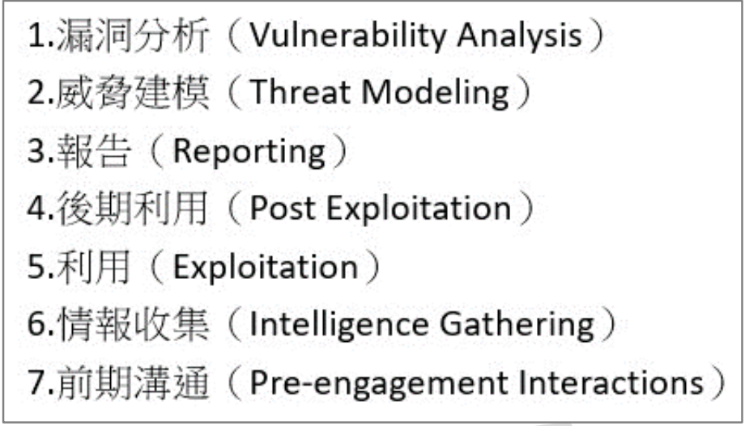
D
威脅建模 > 前期溝通 > 情報收集 > 漏洞分析
PTES (Penetration Testing Execution Standard) 定義了滲透測試的七個主要階段，標準流程大致如下：
1. 前期互動/溝通 (Pre-engagement Interactions): 定義範圍、目標、規則等。
2. 情報收集 (Intelligence Gathering): 收集目標相關資訊。
3. 威脅建模 (Threat Modeling): 分析潛在威脅和攻擊路徑。
4. 漏洞分析 (Vulnerability Analysis): 識別目標存在的弱點。
5. 漏洞利用 (Exploitation): 嘗試利用已發現的漏洞獲取存取權限。
6. 後期利用 (Post Exploitation): 在取得權限後進行提權、橫向移動、維持存取等。
7. 報告 (Reporting): 整理測試結果、風險評估和修補建議。
分析選項提供的排序片段：
(A) 漏洞分析 > 威脅建模 > ... 順序錯誤 (威脅建模應在漏洞分析前或並行)。
(B) 情報收集 > 漏洞分析 > 威脅建模 > ... 順序錯誤 (威脅建模應在漏洞分析前或並行)。
(C) 前期溝通 (1) > 情報收集 (2) > 漏洞分析 (4) > 報告 (7)。這個片段的相對順序符合 PTES 標準流程。
(D) 威脅建模 > 前期溝通 > ... 順序錯誤 (前期溝通應最早)。
因此，排序正確的是 (C)。
在進行網站檢查時, 發現其未設定 HTTP Strict Transport Security (HSTS) 標頭, 請問下列敘述那些較為適切? (複選)
A
可能遭受中間人攻擊(Man-in-the-Middle, MITM)
C
可於網站伺服器中停用 Port 80 的服務來修補這問題
D
可於網站伺服器中停用 Port 443 的服務來修補這問題
HSTS (HTTP Strict Transport Security) 是一種網站安全策略機制，網站透過 HTTP 回應標頭告知瀏覽器，在接下來的一段時間內，只能使用 HTTPS (而非 HTTP) 來與該網站通訊。
- 如果未設定 HSTS，使用者首次訪問或透過 HTTP 連結訪問時，瀏覽器可能會先嘗試 HTTP 連線，然後再被伺服器重導向到 HTTPS。這個初始的 HTTP 連線過程是未加密的，容易受到攻擊。
(A) 中間人攻擊 (MITM) 可以在這個初始的 HTTP 連線階段進行攔截、竊聽或竄改。設定 HSTS 可以強制瀏覽器直接使用 HTTPS，減少 MITM 的機會。因此，未設定 HSTS 可能遭受 MITM。敘述適切。
(B) SSLStrip 是一種特定的 MITM 攻擊技術，它攔截 HTTP 到 HTTPS 的重導向，強迫瀏覽器與伺服器間的通訊降級為 HTTP，從而竊取未加密的資訊。HSTS 可以有效防禦 SSLStrip 攻擊，因為它強制瀏覽器始終使用 HTTPS。因此，未設定 HSTS 可能遭受 SSLStrip 攻擊。敘述適切。
(C) 停用 Port 80 (HTTP) 服務會導致使用者無法透過 http:// 訪問網站，也無法進行 HTTP 到 HTTPS 的重導向，這不是啟用 HSTS 的標準做法，且可能影響使用者體驗或舊連結。正確做法是在 Port 80 上設定重導向至 HTTPS，並在 HTTPS 回應中加入 HSTS 標頭。
(D) Port 443 是 HTTPS 的標準端口，停用它會導致網站無法透過安全連線訪問，與 HSTS 的目的背道而馳。
因此，較為適切的敘述是 (A) 和 (B)。
【題組4】情境如附圖所示。根據所發現的原始碼, 除發現
logLoginAttemp 函數未實做而可能有
OWASP A09:2021-Security Logging and Monitoring Failures 風險, 還有下列何項
OWASP Top 10:2021 風險最可能存在?
(附圖為 Javascript 程式碼片段，包含 authenticateUser, logLoginAttempt, verifyToken 函數及 /login, /api/protected 的路由處理)
function authenticateUser(username, password) {
const query = "SELECT * FROM users WHERE username = '" + username + "' AND password = '" + password + "';";
}
function logLoginAttempt(username, success) {
}
app.post('/login', function(req, res) {
let username = req.body.username;
let password = req.body.password;
let isAuthenticated = authenticateUser(username, password);
logLoginAttempt(username, isAuthenticated);
if (isAuthenticated) {
res.send('Login successful!');
} else {
res.send('Login failed!');
}
});
function verifyToken(token) {
}
app.post('/api/protected', function(req, res) {
let token = req.headers.authorization;
if (!verifyToken(token)) {
res.status(401).send('Unauthorized');
return;
}
});
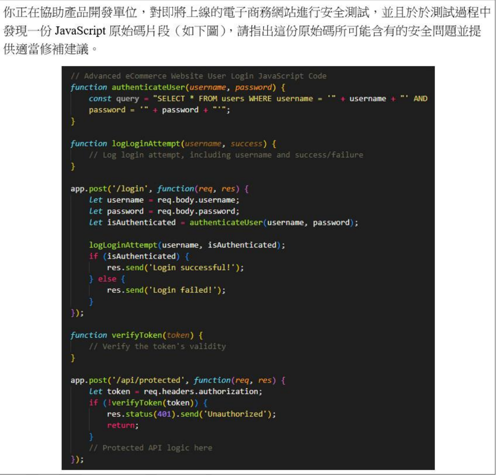
A
A02:2021-Cryptographic Failures (密碼學失效)
B
A03:2021-Injection (注入式攻擊)
C
A05:2021-Security Misconfiguration (安全設定缺陷)
D
A06:2021-Vulnerable and Outdated Components (危險或過舊的元件)
分析 `authenticateUser` 函數中的
SQL 查詢語句：
const query = "SELECT * FROM users WHERE username = '" + username + "' AND password = '" + password + "';";
這段程式碼直接將
外部傳入的 `username` 和 `password` 變數拼接到 SQL 查詢字串中，沒有進行任何
參數化處理或輸入過濾。攻擊者可以輸入惡意的字串（例如，`' OR '1'='1`）來改變
SQL 語句的邏輯，繞過身份驗證或竊取資料。這是一個典型的
注入式攻擊 (
Injection) 漏洞，特別是
SQL Injection。
在
OWASP Top 10:2021 中，
注入式攻擊被歸類在
A03:2021-Injection。
- A02 (密碼學失效) 涉及加密、雜湊等密碼學應用的問題。
- A05 (安全設定缺陷) 涉及伺服器、框架、權限等配置問題。
- A06 (危險或過舊的元件) 涉及使用有已知漏洞的函式庫或元件。
因此，這段程式碼最可能存在的風險是 (B)
A03:2021-Injection。
【題組4】情境如附圖所示。根據所發現的原始碼, verifyToken 函數若要實做安全檢查機制, 下列何項措施最合適?
(附圖同 Q33)
verifyToken 函數的核心目的是驗證客戶端提供的 token 是否有效且未被竄改，以確認請求的合法性。常見的 token 機制（如 JWT - JSON Web Token）通常包含以下部分：
- Header: 描述 token 類型和簽名演算法。
- Payload: 包含聲明 (claims)，如使用者 ID、角色、過期時間 (exp)、簽發時間 (iat) 等。
- Signature: 使用密鑰（如伺服器的私鑰或共享密鑰）對 Header 和 Payload 進行簽名，用於驗證 token 的完整性和來源。
在驗證 token 時，最重要的步驟是：
1. 驗證簽章 (Signature)：確保 token 是由合法的簽發者簽發，並且在傳輸過程中沒有被竄改。這是驗證 token 真實性的關鍵。
2. 驗證聲明 (Claims)：檢查 token 是否過期 (exp claim)，簽發者 (iss claim) 是否正確，接收者 (aud claim) 是否匹配等。
分析選項：
(A) 檢查時間戳記（例如過期時間）是必要的驗證步驟之一，但不是最核心的。
(B) 驗證簽章是確保 token 未被偽造或竄改的根本步驟，是驗證 token 合法性的基礎。
(C) 確認使用者角色是授權 (Authorization) 的一部分，通常在 token 驗證成功之後進行，而非驗證 token 本身的核心機制。
(D) 檢查來源 IP 可能是一種額外的安全措施（token binding），但不是標準 token 驗證的核心部分，且來源 IP 可能會變化（如代理）。
因此，verifyToken 函數最核心、最必要的安全檢查機制是 (B) 驗證 token 的簽章。
【題組4】情境如附圖所示。根據所發現的原始碼, 如要降低 /api/protected 路徑潛在漏洞而危害資料安全, 下列何項措施最合適?
(附圖同 Q33)
`/api/protected` 這個路徑代表一個受保護的 API 端點，它需要有效的 token 才能存取。程式碼片段顯示，在 `verifyToken` 成功後，會執行 "// Protected API logic here"。這個 API 邏輯很可能涉及存取或回傳敏感資料。
降低此路徑潛在漏洞危害資料安全的最合適措施應針對 API 本身及其回傳的資料。
(A) 提升密碼複雜度有助於防止帳號被盜用，但與 API 路徑本身的漏洞關係較間接。如果 token 機制本身安全，即使密碼簡單，未授權者也無法存取。
(B) 網路層防火牆提供基本的存取控制，但對於應用層的 API 漏洞（如業務邏輯錯誤、回傳過多敏感資料）防護能力有限。
(C) 即使 API 存取受到保護，如果其回傳的資料包含不必要的敏感資訊（例如，回傳了完整的用戶物件而非僅顯示名稱），就可能造成資料外洩。因此，對 API 的回應進行去機敏化處理，只回傳必要的最少資訊，是降低資料危害風險的重要措施。
(D) 用戶端行為分析和異常檢測有助於發現異常的 API 使用模式，但更偏向偵測而非直接降低 API 本身漏洞或回應資料的風險。
因此，針對降低 `/api/protected` 路徑潛在漏洞危害資料安全，最合適的措施是 (C)。
【題組4】情境如附圖所示。在你執行完安全檢測並提供相關建議後, 開發團隊對程式進行弱點修補並強化了
logLoginAttempt 函數如圖 1, 下列哪些描述
正確? (
複選)
(原始碼附圖同 Q33)
(圖 1 顯示強化後的 logLoginAttempt 函數)
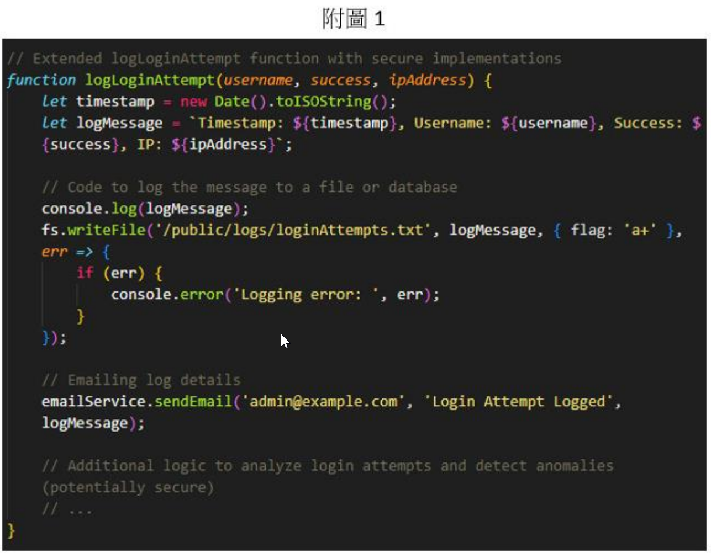
function logLoginAttempt (username, success, ipAddress) {
let timestamp = new Date().toISOString();
let logMessage = `Timestamp: ${timestamp}, Username: ${username}, Success: ${success}, IP: ${ipAddress}`;
console.log(logMessage);
fs.writeFile('/public/logs/loginAttempts.txt', logMessage, { flag: 'a+' }, err => {
if (err) {
console.error('Logging error: ', err);
}
});
emailService.sendEmail('admin@example.com', 'Login Attempt Logged', logMessage);
}
A
記錄 IP 位置有助於識別和追蹤嘗試惡意登入的來源
B
使用 ISO 8601 的時間格式有利於分析, 可紀錄一致且標準化的時間資訊
C
日誌記錄於瀏覽器主控台或可公開存取檔案, 為兼顧安全與可用性的實做方式
D
此函數能夠協助系統管理者識別帳號枚舉攻擊與試圖暴力破解之行為
分析強化後的 `logLoginAttempt` 函數：
- 記錄了時間戳 (Timestamp)、用戶名 (Username)、登入是否成功 (Success) 以及來源 IP (ipAddress)。
- 使用 `toISOString()` 產生時間戳，這是 ISO 8601 標準格式。
- 將日誌訊息輸出到控制台 (`console.log`) 和寫入檔案 (`fs.writeFile`)。
- 還會發送電子郵件通知。
- 預留了分析登入嘗試和偵測異常的邏輯。
(A) 記錄來源 IP 是登入稽核的基本要求，有助於追蹤登入來源，識別潛在的惡意活動。敘述正確。
(B) ISO 8601 是標準化的時間格式，包含時區資訊（或為 UTC），有利於不同系統間日誌的整合與分析，避免因時區或格式混亂導致的判讀困難。敘述正確。
(C) 將敏感的登入嘗試日誌記錄在瀏覽器主控台 (console.log 在伺服器端 Node.js 環境下是輸出到伺服器控制台，而非瀏覽器) 或可公開存取的檔案 (`/public/logs/loginAttempts.txt` 可能表示網站的公開目錄) 是非常不安全的做法，容易造成日誌資訊外洩。安全的做法應將日誌存放在受保護的位置，並限制存取權限。此敘述錯誤。
(D) 透過分析記錄下來的登入嘗試（特別是大量失敗的嘗試、來自特定 IP 的密集嘗試、嘗試不存在的用戶名等），系統管理者可以識別出暴力破解、密碼噴灑或帳號枚舉等攻擊行為。敘述正確。
因此，正確的描述是 (A), (B), (D)。
【題組5】情境如附圖所示。第三方套件供應商提交了一份源碼檢測報告, 報告內容僅顯示受測軟體的版本、程式碼的行數、受測主件檔案的雜湊值, 你發現報告中完全查無任何弱點, 連資訊等級的弱點都沒有, 你該如何向甲方證明所採用的套件在當下是安全無虞?
(題組情境摘要: 你是跨國企業的資安管理人員，需進行集團、子集團的安全檢測與合規驗證。因集團參與A級機關軟體開發案，需針對流程與服務進行合規證明，包含核心系統滲透測試、採購第三方套件的源碼檢測報告、協助集團提交服務開發流程的資安證明。)
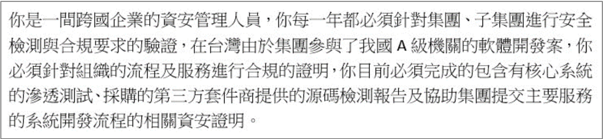
C
直接交付第三方套件供應商提交的源碼檢測報告給甲方
D
自己針對第三方套件進行黑箱檢測並撰寫報告提交於甲方
一份「零弱點」的源碼檢測報告，尤其是連資訊級(Info)弱點都沒有的報告，本身是可疑的。同時，報告內容僅有基本資訊（版本、行數、雜湊值），缺乏檢測過程、工具、規則、範圍等細節，無法證明檢測的完整性與可信度。
為了向甲方（A級機關）證明套件的安全性，需要更有力的證據。
(A) 要求供應商提供「其它」檢測報告，不確定是什麼報告，意義不大。
(B) 要求供應商提交源碼檢測的「歷程報告」或「詳細報告」。這份報告應包含檢測範圍、使用的工具與版本、採用的規則集、檢測時間、執行的步驟、詳細的發現（即使是資訊級或已確認為誤報的項目也應列出並說明），才能證明檢測確實執行過且過程嚴謹。這是相對合理的要求，可以增加報告的可信度。
(C) 直接交付一份內容空泛、可信度存疑的報告給甲方，無法達到證明的目的，甚至可能引發反效果。
(D) 自己進行黑箱檢測（通常指 DAST 或不接觸源碼的測試）與源碼檢測 (SAST) 是不同的方法，無法替代源碼檢測。且甲方要求的可能是供應商提供的源碼檢測證明。
因此，最合適的做法是 (B)，要求供應商提供更詳細、能證明檢測過程與結果的歷程報告。
【題組5】情境如附圖所示。
滲透測試的外包商在進行檢測時, 發現網站根目錄下存在不少的
PHP 檔案, 例如有
1111.PHP,
Shell.php,
probe.php 還發現了一些副檔名為
.dump 的檔案, 其中有一個檔案開啟後如附圖一所示。請問此檔案為下列何項?
(題組情境摘要: 同 Q37)(附圖一內容顯示使用 SMB 連線到 192.168.0.76 (DC)，成功使用帳密 testadmin:Password123 登入，並顯示 [+] Dumping LSA secrets，接著列出 DC$ 帳號的 AES 金鑰、DES 金鑰、NTLM 雜湊值，以及 dpapi machinekey/userkey 和 NL$KM。)
SMB 192.168.0.76 445 DC [*] Windows Server 2012 R2 Standard 9600 x64 (name:DC) (domain:test.lab) (signing:True) (SMBv1:True)
SMB 192.168.0.76 445 DC [+] test.lab\testadmin:Password123 (Pwn3d!)
SMB 192.168.0.76 445 DC [+] Dumping LSA secrets
SMB 192.168.0.76 445 DC TEST\DC$:aes256-cts-hmac-sha1-96:5a0f...
SMB 192.168.0.76 445 DC TEST\DC$:aes128-cts-hmac-sha1-96:d840...
SMB 192.168.0.76 445 DC TEST\DC$:des-cbc-md5:f45b...
SMB 192.168.0.76 445 DC TEST\DC$:plain_password_hex:4e45...
SMB 192.168.0.76 445 DC TEST\DC$:aad3b435b51404eeaad3b435b51404ee:6e93...:::
SMB 192.168.0.76 445 DC dpapi_machinekey:0x974d...
SMB 192.168.0.76 445 DC dpapi_userkey:0xcc3b...
SMB 192.168.0.76 445 DC NL$KM:b4d3d7...
SMB 192.168.0.76 445 DC [+] Dumped 7 LSA secrets to /home/t/.cme/logs/DC_192.168.0.76_...secrets and /home/t/.cme/logs/DC_192.168.0.76_...cached
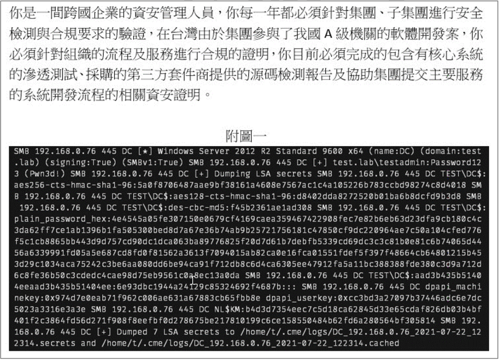
C
這是 CRACKMAPEXEC 分析密碼的結果檔
附圖一的內容顯示了使用 SMB 協議與 網域控制器 (DC) 互動的過程。關鍵資訊包括：
- 成功使用帳號密碼 (`testadmin:Password123`) 進行驗證。
- 執行了「Dumping LSA secrets」的操作。
- 輸出了機器帳號 (`DC$`) 的金鑰（AES, DES）和雜湊值 (NTLM hash - aad3b4...)。
- 輸出了 DPAPI 密鑰和 NL$KM。
- 最後提到將結果儲存到特定路徑下的 `.secrets` 和 `.cached` 文件。
這種透過網路連線（特別是 SMB）與目標互動，進行身份驗證並傾印 LSA Secrets（包含帳號密碼雜湊值、金鑰等）的行為，是後滲透測試中常用的工具CrackMapExec (CME) 的典型輸出特徵。CrackMapExec經常用於在內網中進行橫向移動、憑證獲取和權限提升。
- (A) 這不是偵錯日誌。
- (B) 這不是標準的登入成功/失敗事件日誌 (如 Windows Event ID 4624/4625)。
- (D) Mimikatz 也是用於提取憑證的強大工具，但通常需要在目標主機本機執行才能直接從記憶體中抓取明文密碼或雜湊值。附圖顯示的是透過網路協定遠程操作並 Dump LSA Secrets，更符合 CrackMapExec 的行為模式和輸出格式。
因此，此檔案最可能是 (C) CrackMapExec 分析密碼（更準確地說是傾印 LSA Secrets）的結果檔。
【題組5】情境如附圖所示。當資料查核到資料庫時, 發現資料庫有很大量的合規要求都沒有做到, 但要調整設定必須在不影響資料庫的運作的前提下, 確認資料庫是否安全, 可以透過下列何種方法進行初步的驗證最為合適?
(題組情境摘要: 同 Q37)
問題的核心是在不影響資料庫運作的前提下，對資料庫本身的合規性和安全性進行初步驗證。
(A) 應用程式弱點檢測主要關注與資料庫互動的前端應用程式，而非資料庫本身的設定和安全狀態。
(B) 資料庫安全健檢是專門針對資料庫進行的安全評估活動。它通常包括檢查資料庫的配置（如密碼策略、存取權限、稽核設定）、版本是否過舊、是否缺少重要安全補丁等。這類檢查通常可以在不中斷服務的情況下進行（例如，透過讀取配置資訊、查詢系統視圖等），並且直接評估資料庫的合規與安全狀況。這是最符合題目要求的方法。
(C) 滲透測試通常涉及更積極的攻擊模擬，可能會對資料庫的穩定性產生影響，不適合「不影響運作前提下」的「初步」驗證。
(D) 主機弱點檢測關注的是資料庫所在的作業系統或伺服器主機的漏洞，而非資料庫軟體本身的配置和安全問題。
因此，最合適的方法是 (B) 進行資料庫安全健檢並提交報告。
【題組5】情境如附圖所示。作為跨國企業的資安管理人員, 您在進行核心系統滲透測試時發現了外部系統曾被惡意攻擊, 並留下攻擊殘餘的指令碼。下列哪些安全風險及處理的描述較為適當? (複選)
(題組情境摘要: 同 Q37)
在核心系統滲透測試中發現外部系統曾被攻擊並留下殘餘指令碼，這表明：
1. 外部系統存在被成功入侵的弱點。
2. 攻擊者可能已經獲取了系統權限，甚至可能已經橫向移動到其他系統。
3. 現有的防禦機制（如防火牆、IDS/IPS）可能未能有效阻止或偵測到攻擊。
對應的風險和處理描述：
(A) 系統被入侵通常意味著存在可被利用的漏洞（可能是已知的未修補漏洞，或零日漏洞）。立即識別並修補漏洞是必要的處理步驟。敘述適當。
(B) 發現入侵跡象後，必須對受影響的系統及可能被波及的相關系統進行深入的調查和鑑識，以確定入侵範圍、攻擊者行為、資料是否外洩等。敘述適當。
(C) 雖然提升員工資安意識很重要，但本次發現的問題是外部系統被技術性攻擊，與員工是否點擊釣魚郵件沒有直接的因果關係。此處理方向與當前發現不直接相關。
(D) 既然外部系統被入侵，表示現有的網路邊界防禦（防火牆）和偵測機制（入侵檢測系統）可能存在不足或配置不當。檢查並更新其規則和配置，以加強防禦和偵測能力，是必要的後續處理。敘述適當。
因此，較為適當的描述是 (A), (B), (D)。